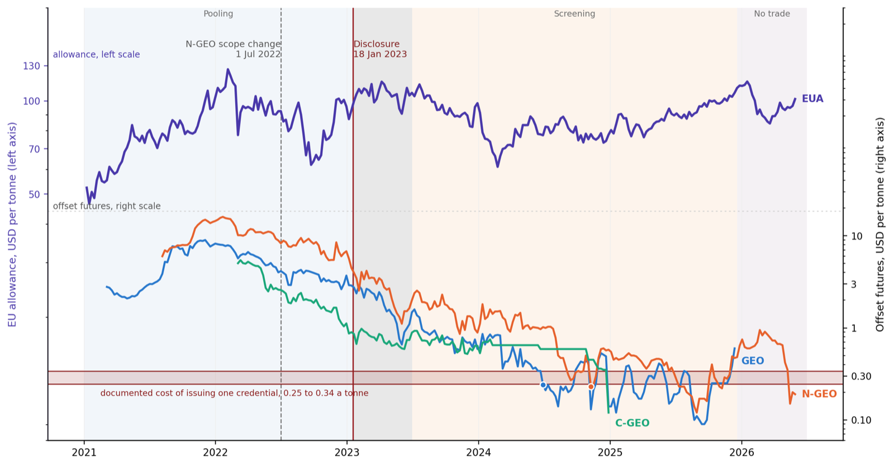
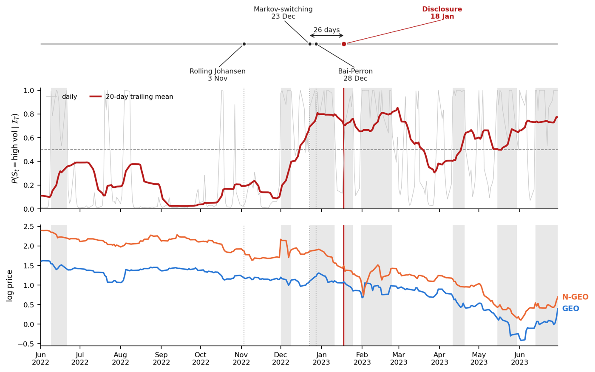

Exchange-traded futures on voluntary carbon credits share an unusual feature: buyers cannot verify the grade of the credit they will be delivered. The paper asks what happened to these markets once public trust in offsets broke, and why.

Key Findings
- Prices fell to the cost of a credential. The three offset contracts fell from several dollars a tonne at their 2021–22 peak to around, and at times below, the documented cost of issuing one credential ($0.25–0.34 a tonne), while the EU allowance stayed far above them.
- The regime change came before the headline. Three break tests date it between 3 November and 28 December 2022, at least three weeks before the disclosure of 18 January 2023.
- The collapse hit every contract. Because the contracts are standardised, the futures price is a cheapest-to-deliver minimum over the eligible credits, so the fall was common to all three contracts rather than confined to the one exposed.
- Remedies have to travel with the credit. Only a remedy attached to the unit itself reaches the delivery floor. In the US renewable fuel programme, the one regulator that required auditors to replace invalid credits withdrew that requirement within two years.
